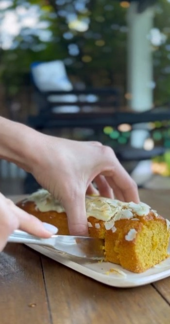
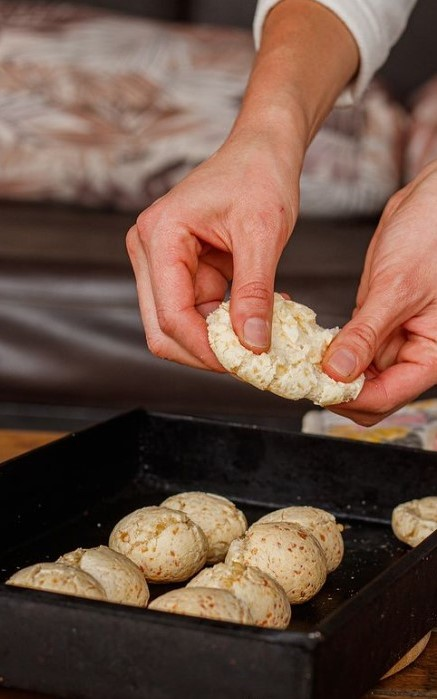

¿Quienes somos?
Inicios de la empresa
"Kuibi" es una empresa que surgió de la experiencia personal y la pasión de su
fundadora, Juliana Moreno. Desde temprana edad, Juliana enfrentó un diagnóstico de intolerancia al
gluten, lo que transformó su relación con la comida y la llevó a buscar alternativas que no
comprometieran el sabor ni la calidad. A lo largo de los años, Juliana se dio cuenta de la escasez de
opciones realmente deliciosas y seguras para quienes, como ella, deben evitar el gluten. Esto la inspiró
a combinar su amor por la cocina con un profundo deseo de ayudar a otros en situaciones similares.
En sus inicios, Juliana comenzó en una pequeña cocina, donde experimentó incansablemente con
recetas y técnicas para crear productos libres de gluten que fueran tanto nutritivos como sabrosos. A
través de la prueba y el error, y con un enfoque meticuloso en la selección de ingredientes de alta
calidad, Juliana logró perfeccionar sus recetas, transformando su pasión en un proyecto tangible.
Su objetivo era ofrecer una experiencia culinaria gratificante y libre de preocupaciones para aquellos que
enfrentan restricciones alimentarias.
Con el tiempo, su pequeño emprendimiento creció gracias al apoyo de familiares, amigos y una
comunidad local que apreciaba su dedicación y compromiso. Lo que comenzó como una idea sencilla en una
cocina casera se convirtió en "Kuibi", una empresa reconocida por su amplia variedad de productos
innovadores, desde panes y pasteles hasta comidas completas. La empresa no solo se ha establecido como
un referente en el mercado de alimentos sin gluten, sino que también ha creado una red de clientes
leales que valoran la calidad y el sabor de sus ofertas.
Juliana Moreno continúa siendo el corazón y el alma de "Kuibi", manteniendo su compromiso con la
excelencia y la autenticidad. Su historia es un testimonio de cómo la pasión personal puede transformar
desafíos en oportunidades, y su empresa sigue creciendo, inspirando a otros a disfrutar de una
alimentación sin gluten sin renunciar a la calidad ni al placer de comer bien.
Sobre la fundadora

Juliana Moreno, fundadora de "Kuibi", es una mujer cuya vida y carrera están
profundamente marcadas por su experiencia personal con la intolerancia al gluten. Nacida en una familia
con una rica tradición culinaria, Juliana creció en un entorno donde la comida no solo era un sustento,
sino una forma de celebración y conexión familiar. Desde joven, mostró una notable inclinación por la
cocina, disfrutando de experimentar con ingredientes y técnicas, siempre bajo la guía de su madre y
abuelas que le enseñaron el arte de cocinar con amor y dedicación.
A los 15 años, Juliana fue diagnosticada con intolerancia al gluten, un desafío que inicialmente
le resultó abrumador. La dificultad de encontrar alimentos que se ajustaran a sus necesidades sin
sacrificar el sabor la llevó a explorar por sí misma el mundo de la cocina libre de gluten. Su
frustración con las opciones comerciales limitadas la motivó a aprender más sobre la química de los
ingredientes y las técnicas de cocina necesarias para crear productos sabrosos y saludables.
Decidida a transformar su experiencia personal en una oportunidad para ayudar a otros, Juliana
comenzó a investigar y experimentar en su cocina casera. Su enfoque meticuloso y su pasión por el
detalle le permitieron desarrollar recetas innovadoras que no solo eran seguras para quienes tenían
intolerancia al gluten, sino que también destacaban por su sabor y textura. Tras muchos meses de pruebas
y ajustes, logró perfeccionar sus productos, lo que la llevó a fundar "Kuibi".
El camino no fue fácil, y Juliana enfrentó numerosos desafíos, desde la búsqueda de ingredientes
adecuados hasta la construcción de una red de proveedores y clientes. Sin embargo, su resiliencia y
determinación fueron claves en su éxito. Con un enfoque centrado en la calidad y el compromiso con sus
clientes, Juliana logró establecer una marca que se distingue no solo por la seguridad de sus productos,
sino también por su capacidad para ofrecer una experiencia culinaria placentera.
Hoy en día, Juliana Moreno no solo es conocida por su habilidad para crear deliciosos productos
sin gluten, sino también por su papel como defensora de una alimentación inclusiva y saludable. Además
de dirigir "Kuibi", Juliana se involucra activamente en la comunidad, participando en eventos y talleres
educativos para compartir su conocimiento y apoyar a otras personas con intolerancias alimentarias.
La historia de Juliana es un testimonio inspirador de cómo la adversidad personal puede
convertirse en una fuerza motriz para la innovación y el emprendimiento. Su éxito con "Kuibi" no solo
refleja su habilidad culinaria, sino también su dedicación a mejorar la vida de aquellos que enfrentan
restricciones dietéticas, demostrando que es posible disfrutar de la comida con plenitud y satisfacción,
sin importar las limitaciones.
A donde nos dirigimos

"Kuibi" se encuentra en una etapa emocionante de expansión y crecimiento. La
empresa, que comenzó como un pequeño emprendimiento en una cocina casera, está ahora en un camino de
expansión que busca llevar sus deliciosos productos sin gluten a una audiencia más amplia en todo
Argentina. La visión de Juliana Moreno, fundadora de la empresa, es llevar la calidad y el sabor de
"Kuibi" más allá de su mercado local, estableciendo una presencia significativa en las principales
ciudades del país.
El primer paso en esta ambiciosa expansión es la apertura de nuevas sucursales en ciudades clave
como Buenos Aires, Córdoba y Rosario. Estas nuevas ubicaciones no solo permitirán a más clientes acceder
a sus productos, sino que también ayudarán a establecer alianzas con proveedores locales y fomentar la
economía regional. Además, "Kuibi" está trabajando en la construcción de una red de distribución más
robusta para asegurar que sus productos lleguen frescos y en óptimas condiciones a todos los rincones
del país.
En cuanto a la ampliación de su línea de productos, la empresa tiene planes para diversificar su
oferta más allá de los panes y pasteles tradicionales. Juliana y su equipo están desarrollando nuevas
recetas que incluyen opciones innovadoras como snacks saludables, comidas listas para llevar y mezclas
para hornear que permiten a los consumidores preparar sus propias delicias en casa. La idea es ofrecer
una gama completa que cubra todas las necesidades alimenticias de sus clientes, desde el desayuno hasta
la cena, sin comprometer la calidad ni el sabor.
Además, "Kuibi" está invirtiendo en investigación y desarrollo para incorporar ingredientes
funcionales y superalimentos en sus productos, mejorando así sus beneficios nutricionales. La empresa
también está explorando la posibilidad de certificar sus productos con estándares internacionales de
seguridad alimentaria, lo que no solo garantizará la confianza de los consumidores locales, sino también
abrirá puertas a mercados internacionales.
En el ámbito digital, la empresa está ampliando su presencia en línea con un nuevo sitio web de
comercio electrónico y una plataforma de suscripción que permitirá a los clientes recibir productos
frescos directamente en sus hogares. Esta estrategia digital no solo facilitará el acceso a sus
productos, sino que también ofrecerá una experiencia de compra personalizada y conveniente.
Juliana Moreno y su equipo están emocionados por los próximos pasos de la empresa y están
comprometidos a mantener su misión de ofrecer productos sin gluten de la más alta calidad. A medida que
"Kuibi" continúa creciendo y expandiéndose, su objetivo es no solo llegar a más consumidores, sino
también educar e inspirar a otros sobre la importancia de una alimentación libre de gluten que sea
sabrosa, accesible y nutritiva.